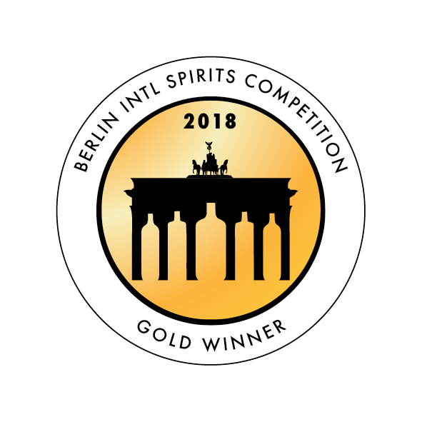
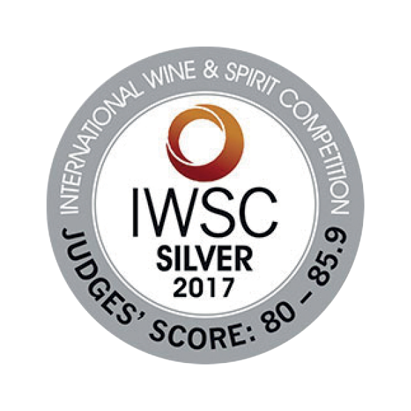
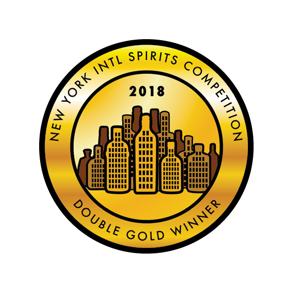
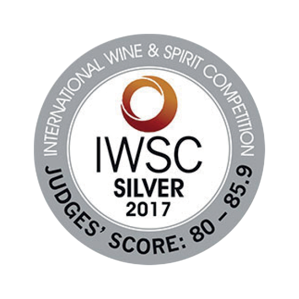
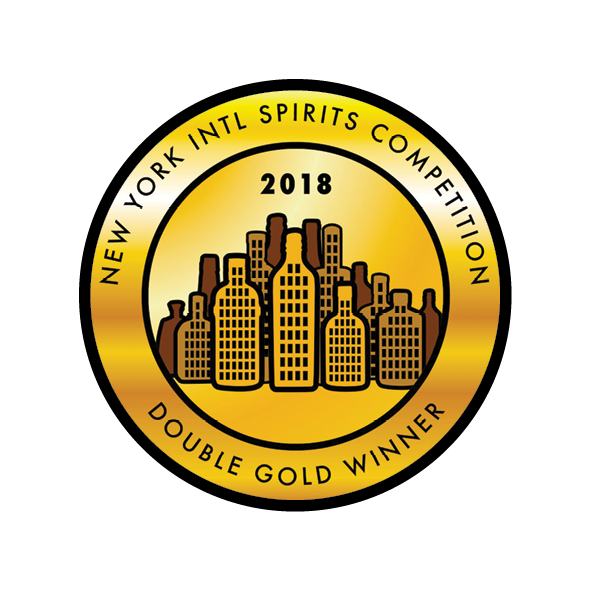

Λικέρ
Το «Λικέρ Μαστίχα Χίου Ψυχής» παράγεται παραδοσιακά στη Χίο από την
ποτοποιία Ψυχή και είναι προϊόν απόσταξης αυθεντικής Μαστίχας Χίου.
Ο ιδρυτής της «Παραδοσιακής
Ποτοποιίας Ψυχής» απόσταξε τους κρυστάλλους της Μαστίχας, παίρνοντας
φυσικό απόσταγμα και δημιούργησε μετά από πολλές προσπάθειες, το εξαιρετικό «Λικέρ Μαστίχα Χίου Ψυχής»,
Προιόν με Προστατευόμενη Γεωγραφική Ενδειξη (ΠΓΕ). Η τοπική παράδοση θέλει το «Λικέρ Μαστίχα Χίου Ψυχής» να
σερβίρεται συνοδευόμενο από
επιδόρπιο, μετά από κάθε γεύμα ή μαζί με τον καφέ.
Σήμερα, η 4η γενιά, ακολουθώντας την καλά
κρυμμένη οικογενειακή συνταγή (που περνάει από γενιά σε γενιά), προμηθεύεται από την Ενωση Μαστιχοπαραγωγών
Χίου την αυθεντική μαστίχα την
αποστάζει στους χάλκινους παραδοσιακούς άμβυκές της, δημιουργώντας το βραβευμένο διεθνώς «Λικέρ Μαστίχα Χίου
Ψυχής» που περικλείει στη γεύση του όλη την ιστορία του νησιού.
Το «Λικέρ Μαστίχα Χίου Ψυχής»
αποτελεί εξαιρετική επιλογή
για κατανάλωση σε σφηνάκι (δοκιμάστε το παγωμένο) ή σε cocktails ή ακόμα και ως απεριτίφ σερβιρισμένο σε
κολωνάτο ποτήρι με τριμμένο πάγο.

 





– – – – – – – – – – – – – – – –
{kind=link}
ΛΙΚΕΡ ΜΑΣΤΙΧΑ ΨΥΧΗΣ 26%
{kind=link}
ΛΙΚΕΡ ΜΑΝΤΑΡΙΝΙ ΨΥΧΗΣ 26%
{kind=link}
ΛΙΚΕΡ ΠΕΡΓΑΜΟΝΤΟ ΨΥΧΗΣ 26%
{kind=link}
ΛΙΚΕΡ ΤΡΙΑΝΤΑΦΥΛΛΟ ΨΥΧΗΣ 26%
{kind=link}
ΛΙΚΕΡ ΒΥΣΣΙΝΟ ΨΥΧΗΣ 26%
{kind=link}